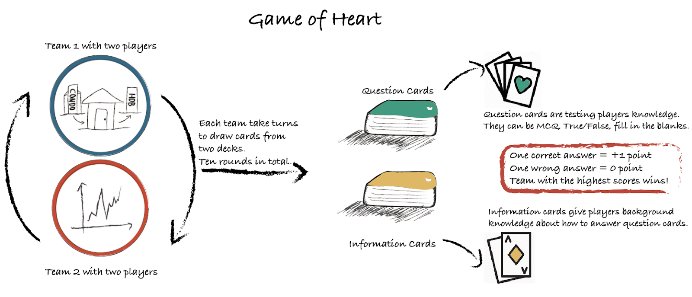
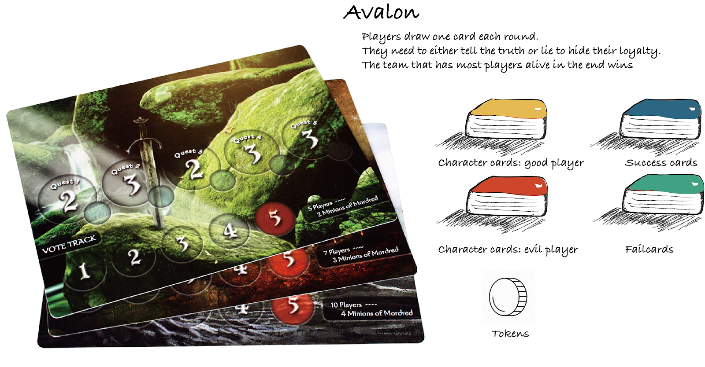
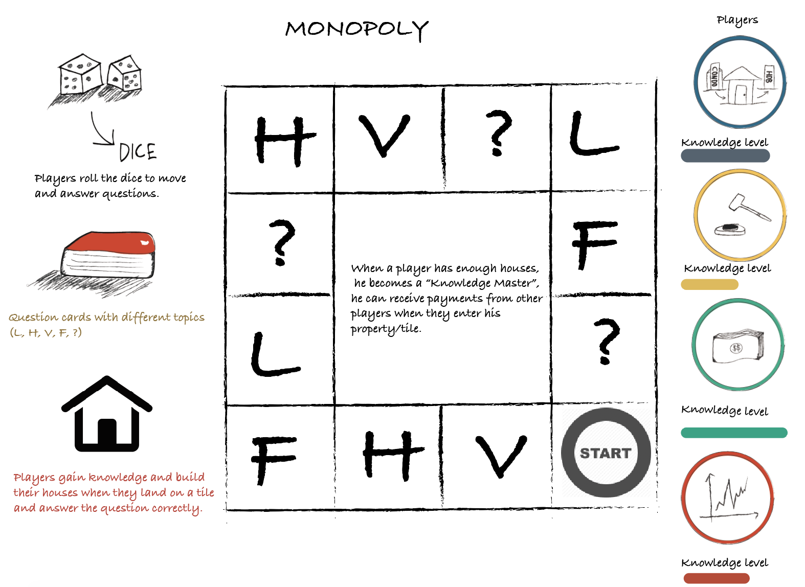
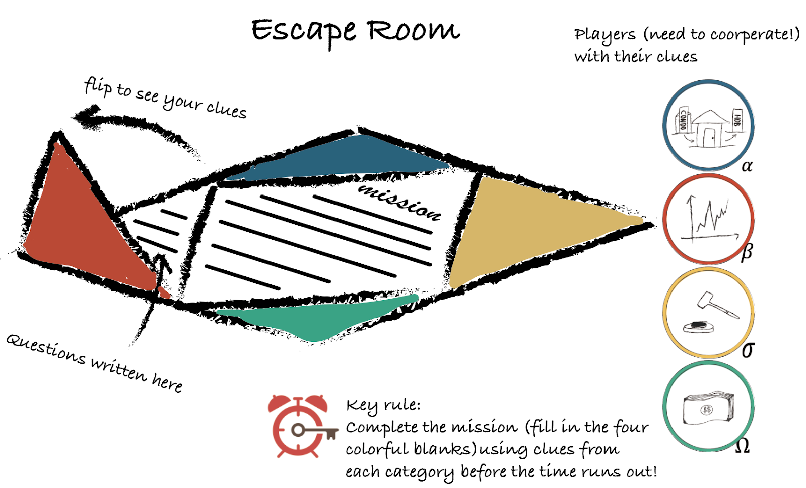

| Integrated Concepts |
Description |
| Hearts |
- Form two teams of two people each.
- At every turn, a teams draw a card each from two decks - Q(question) and I(information).
- I card contains background information that helps player to answer questions.
- Q card contains either a MCQ, fill in the blanks or True/False question.
- Answer Q using I. A correct answer earns 1 point and a wrong answer earns no point.
- The team with the highest score at the end of 10 rounds wins.
|
|
Trivial Pursuit
|
- 2-4 players take turns to roll a die and move around the board comprising question tiles.
- 3 types of tiles - Leading, Penalty and Reward.
- Upon landing on a Leading/Reward tile, the player answers a question card from the question deck.
- Correct Answer on a Reward tile - collect colored token and roll dice again.
- Correct Answer on a Leading tile - roll dice again.
- Wrong Answer on Reward/Leading tile - end turn.
- Land on Penalty tile - miss a turn.
- First player to collects 4 tokens wins.
|
| Avalon |
- In Avalon, players are divided into 2 different teams - good and bad (no ugly). The bad guys need to lie to hide their loyalty.
- In each round, certain players will be chosen to embark on a mission and all players vote on the success of the mission. A mission team with a bad guy is a failure.
- The game ends when there are >2 failures, resulting in the good team losing.
|
| Monopoly |
- This game is highly similar to Monopoly.
- L: laws, H: housing types, F: finance, V: value, ?: choice
- Players gain knowledge and build their houses when they land on a tile and answer the corresponding question correctly.
- Each tile represents a different category labelled by a letter and color.
- When a player has enough houses, he/she becomes a “Knowledge Master” in that category and he/she can receive payments from other players when they enter his/her property/tile.
- The game ends whenever the players want it to.
|
| Escape Room |
- This is a cooperative 4 player game.
- Objective is to complete with mission with the aid of clues from 4 branches of knowledge.
- If players can complete the mission within the time limit, everyone wins!
|



